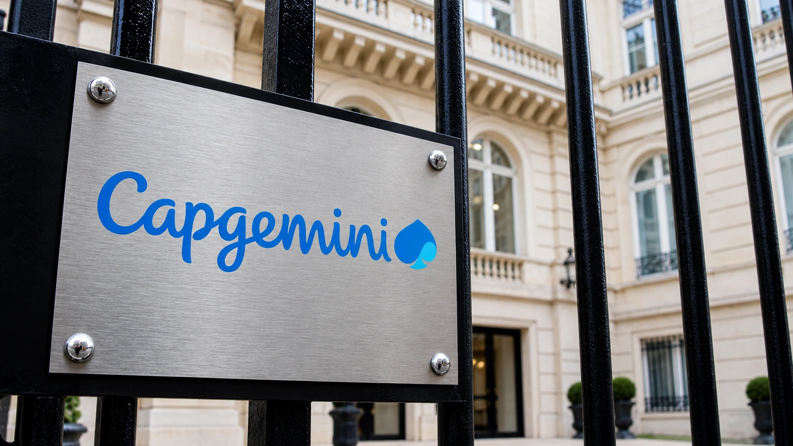

Capgemini Raises Its Outlook as Companies Pay to Make AI Work
IT consultant Capgemini lifted its 2026 sales-growth target. Acquisitions help the increase, while unchanged cash and margin goals temper the headline.

Capgemini raised its annual revenue-growth target Friday, offering evidence that the push to introduce artificial intelligence into established businesses is generating work for IT consultants. The French group helps companies redesign processes and upgrade technology, placing it in a different part of the AI economy from the firms selling computing capacity or developing the models themselves.
Its update suggests that buying access to a capable AI system is only one part of the corporate spending decision. Companies also need usable data, connections to existing software and rules governing what automated tools may do. Those requirements create implementation work, even when the financial return from the finished deployment remains uncertain.
The higher sales target has an acquisition component
Capgemini now targets 2026 revenue growth of 9.0% to 9.5% at constant exchange rates, compared with 8.5% to 9.0% previously. Third-quarter revenue reached €6.073 billion, up 11.7% on that currency-adjusted basis. Reported growth was 12.6%. These are different comparisons, and neither removes the effect of acquisitions from the group’s sales.
The company estimates that acquisitions will contribute around five percentage points to annual growth. That is a substantial part of the outlook. Buying another business adds its revenue to the consolidated total, which is economically different from winning more work with the same operating base. Investors assessing AI demand need to distinguish the two before attributing the entire increase to new customer spending.
The distinction also affects comparisons across quarters. Revenue growth can slow when an acquired company enters the prior-year base, even if the combined business continues performing steadily. Conversely, a large reported increase can overstate the improvement in underlying demand. A useful comparison follows the business through that change in the base rather than treating each headline growth rate as directly interchangeable.
Implementation spending reaches beyond the model
Chief Executive Aiman Ezzat said clients were concentrating on wider AI deployment and the technology and data changes needed to support it. That is management’s account of customer demand, rather than independent proof that every implementation earns an acceptable return. Reuters reported that the group raised its outlook for the second time this year.
The practical work can be less visible than a chatbot demonstration. A tool that answers an employee’s question may need access to several internal systems, reliable permissions and a way to handle missing or contradictory records. Automating an action adds another requirement: a company must decide which steps can proceed without review and who remains responsible when an output is wrong.
For a consultant, that complexity can generate contracts. For the customer, it is part of the cost that must be recovered through better service, higher output or lower expenses. TTN’s guide to enterprise AI returns explains why a successful demonstration and a worthwhile operating investment are separate milestones. Revenue earned by an implementation partner does not establish the client’s eventual savings.
Margin and cash targets did not follow sales upward
Capgemini left its operating-margin target at 13.6% to 13.8% and its organic free-cash-flow objective at roughly €1.8 billion to €1.9 billion. Bookings increased 3.4% at constant currencies, to €5.401 billion. Those figures provide additional checks on the stronger revenue outlook, while measuring different aspects of the business.
Bookings represent contracted work rather than revenue recognized immediately. Their timing and the duration of projects matter when judging what they imply for future sales. A contract signed during one quarter can support delivery over later periods. Comparing bookings and revenue as if they were cash arriving in the same period would obscure that distinction.
Unchanged cash and margin objectives also put limits on the interpretation of the upgrade. More revenue need not produce a proportionate increase in money available after investment or a higher profit margin. Delivery costs, integration work and restructuring can absorb part of the improvement. The quarter’s announcement is therefore stronger evidence of demand than of an across-the-board increase in financial targets.
TTN’s free-cash-flow explainer is useful here because a company’s chosen cash measure needs to be read alongside its definition. Revenue, operating profit and cash flow can move differently. For a labor-intensive service provider, the timing of customer payments and delivery expenses can matter even when the underlying contract is profitable.
The next test is profitable repeat business
The investment question is whether today’s modernization projects become durable, profitable customer relationships. A company that upgrades its systems once may need continuing support, but that does not guarantee an indefinite increase in consulting budgets. Customers can bring work in-house, simplify a project or demand a larger share of the savings achieved through automation.
Capgemini’s higher outlook gives the AI debate a useful counterpoint: deployment creates work beyond building data centers. The next evidence to examine is the conversion of contracted projects into revenue and cash, with acquisitions separated from underlying progress. That comparison will be more informative than treating any AI-related sales growth as proof that the economics of the entire industry have been resolved.
Sources and methodology
Sources checked October 30, 2026. Official data, company statements and reported findings are attributed in the text. Economic and operational implications are TTN editorial analysis.